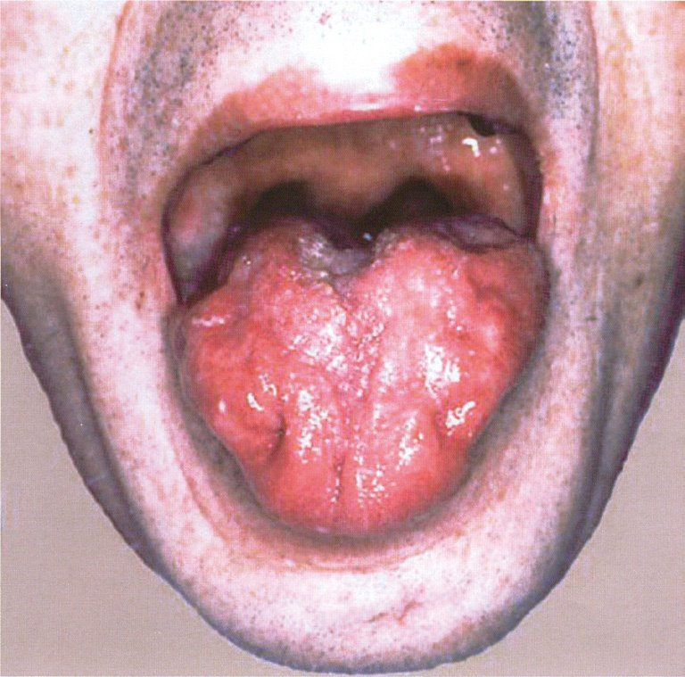
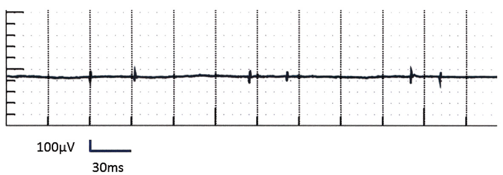
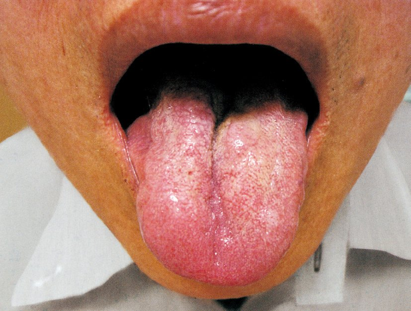
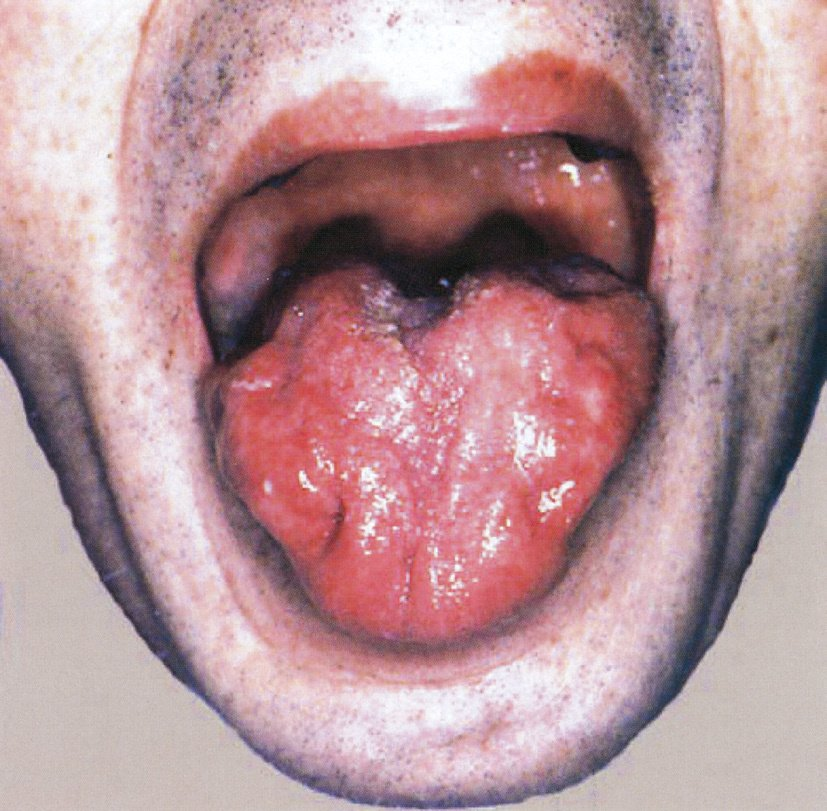
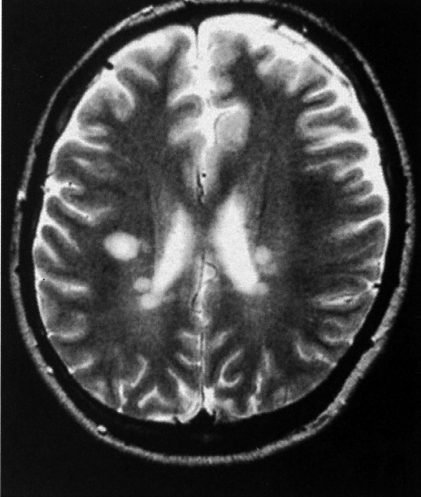
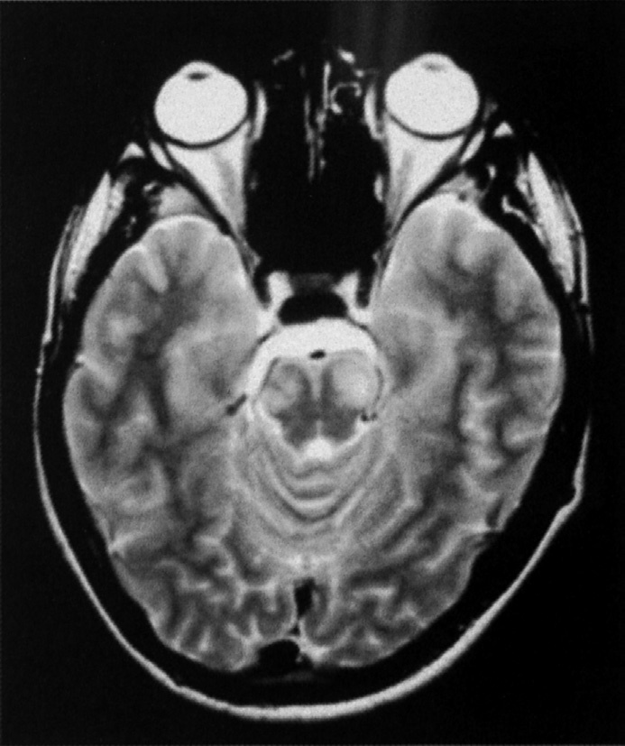
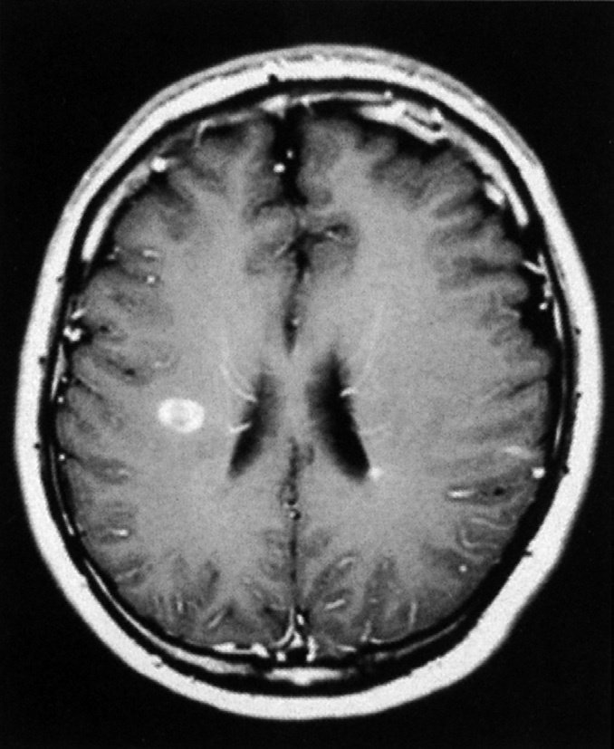
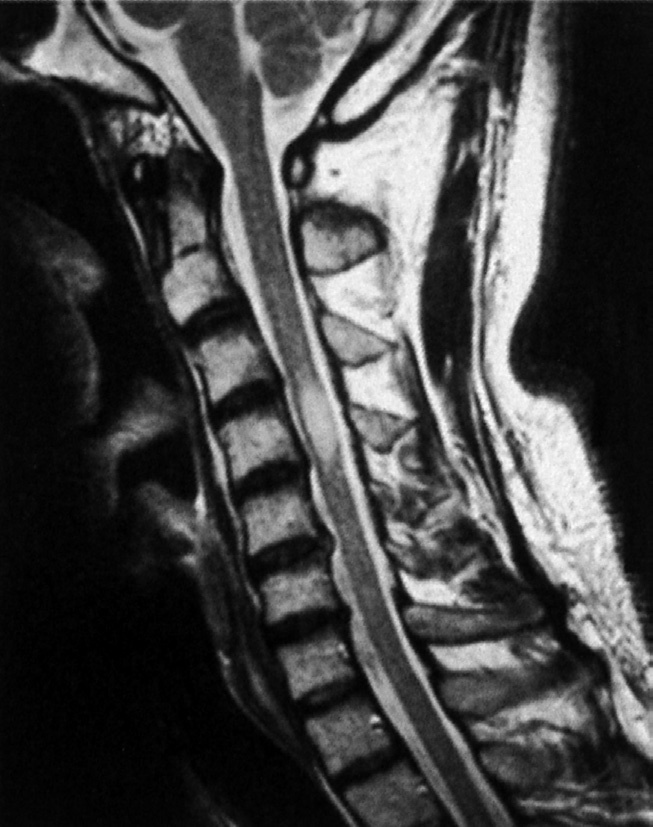

| 疾患 | 白質障害？ |
| Parkinson病 | 黒質（灰白質）変性 |
| 結節性硬化症 | 皮質結節（灰白質） |
| 多発性硬化症（MS） | ○（脱髄：ミエリン（白質）障害） |
| Huntington病 | 線条体（灰白質）変性 |
| ADEM（急性散在性脳脊髄炎） | ○（ウイルス後脱髄：白質） |
| 所見 | MS | NMOSD |
| 視力低下 | ○ | ○（より重篤） |
| 血清OB | 陽性（85%） | まれ |
| CSF細胞数増多 | なし〜軽度 | 高度（多核球） |
| 末梢神経伝導 | 正常 | 正常 |
| 脳MRI（側脳室周囲） | 多発病変 | まれ |
| 脊髄MRI | 短い（1-2椎体） | 長い（3椎体以上） |
| 抗AQP4抗体 | 陰性 | 陽性（80%） |




